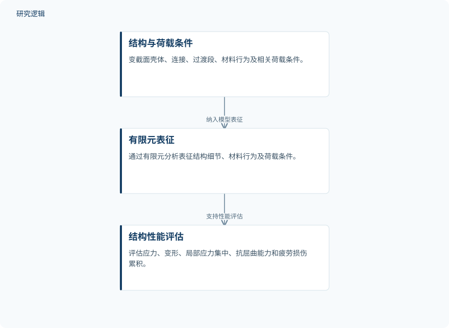

摘要解读
风力机塔架结构设计与性能分析综述
Review on Structural Design and Performance Analysis of Wind Turbine Towers
解读更新 2026-11-10 17:18 · 依据公开摘要整理，未核验全文细节
风机容量与轮毂高度不断增加，塔架如何兼顾结构安全、耐久性与成本效益？这篇综述以有限元分析为主线，梳理不同塔架的性能问题，为理解局部连接、疲劳损伤与动力响应之间的关系提供阅读入口。
文章目录
塔架增高，关注点不只是承载能力
塔架是风力机的关键支撑结构。随着机组容量和轮毂高度增加，其安全性、耐久性与成本效益变得更加重要。摘要将钢制筒形、混凝土、钢—混凝土混合及格构式塔架纳入综述范围，讨论内容涵盖力学行为、耐久性、静力响应、疲劳以及动力和抗震特性。
这篇文章的定位是综述，而非报告某一款新塔架的试验结果。它关注的是不同结构形式的设计与性能特征，以及有限元分析如何支撑这些问题的评估；摘要并未给出各类塔架优劣的统一排名。
有限元连接结构细节与性能评估
综述特别强调有限元分析（FEA）的作用：通过表征变截面壳体、连接、过渡段、材料行为及相关荷载条件，评估应力分布、变形、局部应力集中、抗屈曲能力与疲劳损伤累积。这里的方法主线是从结构和荷载的建模走向性能评估，而不是摘要已确认的一套统一计算流程。
摘要还提到，将有限元与机器学习预测、声发射监测及振动控制装置结合的新兴方法。但没有进一步说明这些方法所用的数据、模型配置或具体实施步骤。
依据摘要整理的有限元分析主线


仅概括摘要明确描述的建模对象与评估关系，不代表论文原图或统一实验流程。
下载 SVG图示关系说明
实线表示相邻阶段的信息流，虚线表示跨阶段联系或反馈。
结构与荷载条件 → 有限元表征：纳入模型表征；有限元表征 → 结构性能评估：支持性能评估
连接、循环风荷载与动力效应各有重点
据摘要归纳，静力评估需要特别关注法兰连接与过渡区域；疲劳性能则受到循环风荷载和塔架特定荷载条件的显著影响。这意味着阅读相关分析时，需要区分局部构造问题与循环荷载作用，不能仅凭整体静力表现判断疲劳性能。
模态与地震分析进一步凸显了固有频率控制、长周期地震动、近场效应以及土—结构相互作用对动力响应的重要性。综述总体认为，有限元能够为主要结构性能分析，以及设计优化、耐久性评估和全寿命性能评价提供有效框架。
摘要尚不能回答比较与验证有多充分
本解读仅依据完整摘要，不能判断综述纳入文献的数量、检索与筛选方式，也无法确认所覆盖塔架的尺寸、材料参数及工况分布。不同结构形式是否在一致条件下比较，有限元结果经过何种试验或现场数据验证，同样需要进一步阅读正文确认。
摘要未给出预测误差、疲劳寿命或优化收益等定量结果，因此不能据此推断某类塔架更可靠，或机器学习方法已提升工程性能。数字孪生与结构健康监测被表述为未来可能加强融合的方向，不应解读为已经验证的应用效果。
阅读启发：先看预测对象，再看验证依据
阅读启发：对疲劳可靠性与智能运维感兴趣的读者，可进一步关注机器学习究竟预测何种结构响应，监测信息如何与有限元分析衔接，以及相关结论适用于哪些荷载条件。这些是由摘要引出的阅读问题，并非本文已经给出的答案；当前资料也不足以支持关于生成式设计或大语言模型应用的结论。
以上为本站阅读启发与建议，不是论文已验证的结论。